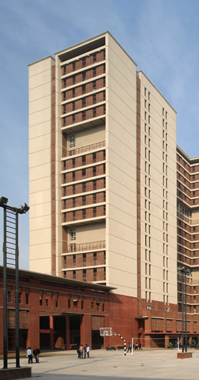
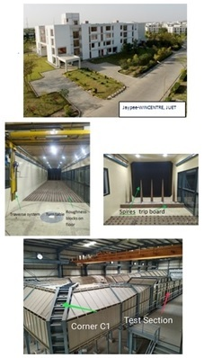

Our All Campus
Total 3 units of JIIT are there in india such as JIIT 128, JUIT Solan, JUET Guna

NOIDA
SOLAN

JIIT is a best University with 100% of placement every year. It is better
than some of the NITs and Government's colleges
The Institute currently offers programmes leading to B.tech, M.tech, MBA and Ph.D Degress.
The Dual Degree Programs entitle the students to get both the Bachelors as well as the Masters Degree. JIIT provides Dual degree B.tech and M.tech programs in varoius streams such as CSE, ECE, IT and Biotechnology.
JIIT provides various under Graduation programs such as B.tech in varoius streams such as CSE, ECE, IT and Biotechnology with the best environment. The Programs of study emphasize strong conceptual understanding and practical skills in their respective areas of specialization.
JIIT has been successfully running M. Tech Programs in Biotechnology,CSE,CSE with specialization in Information Security, CSE with specialization in Mobile Technology, Data Analytics, ECE with specialization in Communication Systems, Materials Science & Engineering and Computational Mathematics and an MBA program.
Total 3 units of JIIT are there in india such as JIIT 128, JUIT Solan, JUET Guna
Hostel facilities are pretty good here at JIIT as compared to other colleges.
The Learning Resource Centre at JIIT Noida is an excellent repository of learning resources. It is situated in the basement of ABB-III, which can accommodate about 700 users at a time. It has more than 73 computer nodes with high speed Internet & Intranet connectivity. It is fully integrated with the latest barcode technology with EM Security System and international standard library management open source.
JIIT provides a squash court, pool table, table tennis, 2 outdoor badminton courts and one basketball court for students.There is a multi purpose hall(air conditioned) which constitutes 3 indoor badminton courts(they are amazing) and 3 table tennis tables.There are 2 cricket nets, one has a concrete pitch and other grass pitch. No one is able to play on the grass pitch so cemented pitch is used for practise and trials.
Starting from breakfast, you get a variety early in the morning. Each day you will get a type of fruit mostly banana, oranges, water melon. For eating its paranthe, poha, upma, puri sabzi, pao bhaji etc.In lunch you will get the usual, dal, roti, rice, sweets, some other vegetable, etc.In dinner its almost same as lunch dal, vegetable, rice, roti.Specials, on various occasions like navratri and all you will get the special food to eat served on fasts to those who wanna eat.
These are the reviews of some student on JIIT Noida.......
JIIT noida is a nice college to opt. They give a very lavish infrastructure and good quality of education. Also, the placements of this college are average, but if we compare it with the other colleges its placement will definitely come out to be better.
JIIT, Noida is a decent college. It has great infrastructure. It flaunts a world class auditorium. It has hostels with swimming pools, gym, cafe, Annapurna(mess) and is central air conditioned. The classes and labs are modern and well equipped. LRC(library) has ample of books on each topic.